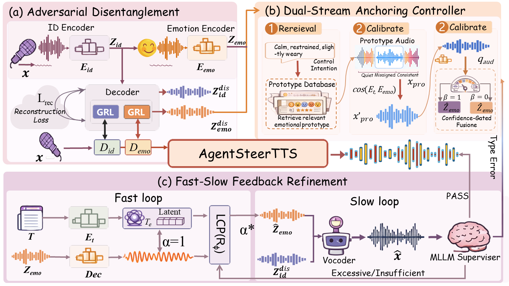
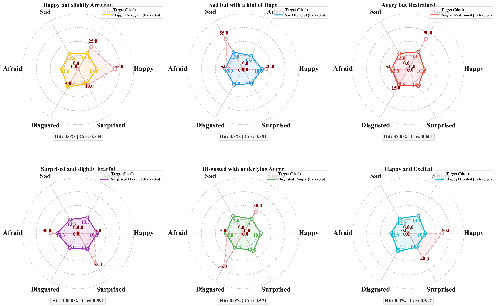
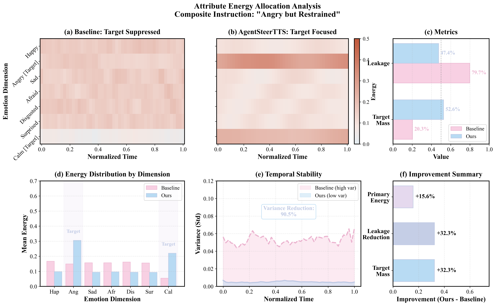
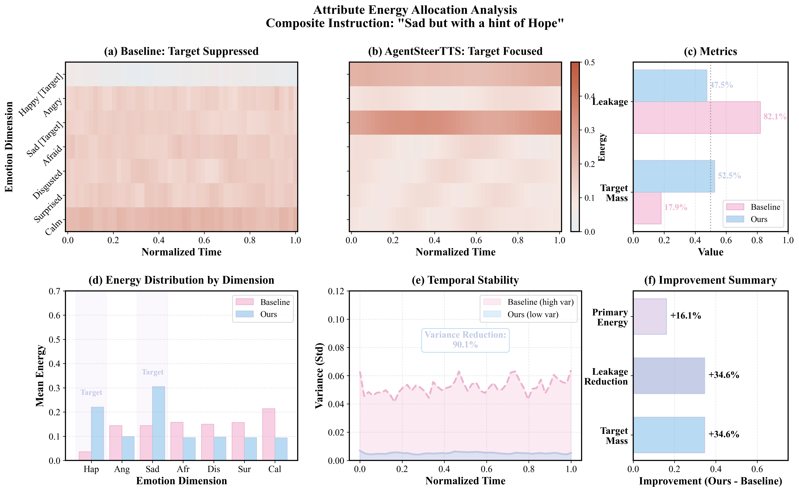

Happy
Positive
IndexTTS2
CosyVoice2
AgentSteerTTS
Multi-Agent Closed-Loop Steering Framework
A Multi-Agent Closed-Loop Steering Framework for Intent-Consistent Expressive Text-to-Speech
While current TTS models can be highly expressive, precise control over fine-grained composite instructions remains difficult due to the structural mismatch between discrete textual intents and continuous acoustic realizations. Inspired by human cognitive decoupling, we propose AgentSteerTTS, a multi-agent, closed-loop framework for intent-faithful emotional steering.
We first introduce an adversarial disentanglement agent to mitigate speaker-emotion leakage by learning separable identity and emotion-prosody subspaces with leakage-suppressing regularization. Subsequently, we introduce a Dual-Stream Anchoring Controller, where a Retrieval Agent leverages a large-scale constructed library of fine-grained acoustic prototypes to ground abstract intent, while a Synthesis Agent transforms these cues into continuous control vectors through gated fusion. Finally, we implement a fast-slow feedback mechanism where a Fast Control Agent performs rapid latent gradient correction for intensity calibration, and a Supervisor Agent provides high-level perceptual critique to rectify semantic-acoustic discrepancies.

Our pilot study reveals that existing TTS models exhibit systematic biases when handling composite emotional instructions, failing to faithfully express multi-dimensional emotional intents.

We present side-by-side audio samples that make the comparison immediate: same content and speaker condition, different emotional controllability.
Fine-grained mixed instructions test whether a model can preserve both dominant and secondary emotional cues.
Core taskThe new ICML asset bundle compares neutral and five basic emotions across IndexTTS2, CosyVoice2, and ours.
New samplesLow, medium, and high intensity samples demonstrate controllable acoustic strength under fixed semantics.
CalibrationComplex instructions combining multiple emotional attributes - our core contribution.
| Reference Audio | Composite Instruction | Text Content | IndexTTS2 | CosyVoice2 | AgentSteerTTS (Ours) |
|---|---|---|---|---|---|
|
Speaker Reference
|
Happy but slightly Arrogant | 我早就知道会是这个结果，这种事对我来说太简单了！ | |||
| Sad but with a hint of Hope | 虽然现在很难过，但我相信明天会更好的。 | ||||
| Angry but Restrained | 我很生气，但我会控制好自己的情绪，你给我记住。 | ||||
| Surprised and slightly Fearful | 那个声音是什么？突然吓了我一跳！ | ||||
| Disgusted with underlying Anger | 这种行为真是太让人恶心了，我无法容忍！ | ||||
| Happy and Excited | 天哪，我中奖了！太不可思议了，太开心了！ |
Fine-grained control over emotion intensity levels. Same text, different intensity.
| Emotion | Text | Low (30%) | Medium (60%) | High (100%) |
|---|---|---|---|---|
| 😊 Happy | 这个消息真是太好了。 | 微笑 | 开心 | 狂喜 |
| 😠 Angry | 你这样做是不对的。 | 不悦 | 生气 | 暴怒 |
| 😢 Sad | 这件事让我很难接受。 | 失落 | 难过 | 悲痛 |
Attribute energy allocation analysis showing how AgentSteerTTS concentrates energy on target dimensions while reducing leakage.

